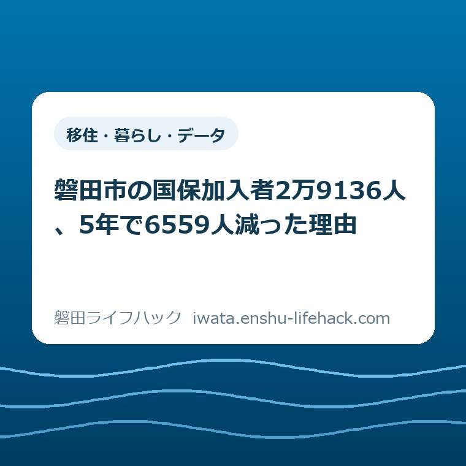

移住・暮らし・データ
磐田市の国保加入者2万9136人、5年で6559人減った理由

この記事の要点
Q. 磐田市の国民健康保険は、なぜこんなに加入者が減っているのですか？
A. 令和元年度末の35,695人から令和6年度末の29,136人へ、5年で6,559人（18.4%）減りました。ただし磐田市が公表した令和6年度の異動内訳では、社会保険との出入りは914人のプラスです。減らしているのは75歳到達による後期高齢者医療への移行2,286人。加入者は減っても、1人あたりの負担は増えています。
導入——「社保に抜けたから減った」で片づかない
磐田市の国民健康保険に入っている人は、令和6年度末で29,136人です。磐田市が国保運営協議会に出した資料「数字で見る磐田市の国保（令和6年度速報値）」に載っている数字で、加入世帯は19,536世帯。同じ表の令和元年度末は35,695人でした。5年で6,559人、18.4%減っています（減少数と率は当方算出）。
減った理由を、私は最初「社会保険の適用拡大でパートの方が会社の健康保険へ移ったのだろう」と考えていました。国が短時間労働者の適用範囲を広げてきたのは事実で、磐田市自身もその点に触れています。ところが同じ資料の別のページを開いて、考えを改めました。
磐田市は、国保に入った人と抜けた人の数を、理由別に公表しています。令和6年度は、社会保険を抜けて国保に入った方が6,211人、社会保険に入って国保を抜けた方が5,297人。差し引くと914人のプラスです。社会保険との行き来だけを見れば、磐田市の国保は増えています。
では何が減らしているのか。後期高齢者医療制度へ移った方が2,286人、逆に後期高齢者医療から国保へ戻った方は0人でした。この一方通行が、純減1,483人を作っています。
言い切ります。磐田市の国民健康保険が減っている直接の理由は、就職でも転出でもありません。75歳の誕生日です。この記事では、磐田市が公表している実数だけを使って、その内訳をたどります。数字はすべて2026年8月31日に確認しました。
![磐田市の国民健康保険の被保険者数と加入率の7年間の推移を示した図。磐田市が公表した数字で見る磐田市の国保（令和6年度速報値）によると、被保険者数と市の人口と被保険者割合は、平成30年度末が36,915人・169,725人・21.7パーセント、令和元年度末が35,695人・169,673人・21.0パーセント、令和2年度末が35,182人・169,013人・20.8パーセント、令和3年度末が34,069人・167,663人・20.3パーセント、令和4年度末が32,467人・167,375人・19.4パーセント、令和5年度末が30,619人・166,307人・18.4パーセント、令和6年度末が29,136人・164,914人・17.7パーセント。令和元年度末から令和6年度末までの5年間で被保険者は6,559人、18.4パーセント減ったのに対し、市の人口は4,759人、2.8パーセントの減少にとどまる。国保加入世帯も22,210世帯から19,536世帯へ2,674世帯減り、市の総世帯数が68,858世帯から71,840世帯へ2,982世帯増えているのと逆向きに動いている。国保加入世帯の割合は32.3パーセントから27.2パーセントへ下がった](/blog/20260831-kokuho-29136-decline/fig1.svg)
まず、公式資料から事実を整理する
この記事で使った磐田市の資料は四つです。一つ目が、磐田市の国民健康保険事業の運営に関する協議会に出された「数字で見る磐田市の国保（令和6年度速報値）」。被保険者数、世帯数、年齢構成、異動状況、保険給付費が1本のPDFにまとまっています。掲載ページの更新日は2026年3月5日です。
二つ目が磐田市統計書 令和7年版（ページ更新日2026年3月25日）。「11 福祉」に国民健康保険運営状況の5年分の表があり、保険税額と給付の内訳が載っています。三つ目が「国民健康保険 医療費分析」（ページ更新日2025年12月16日）。四つ目が「国民健康保険税の税率改定」（ページ更新日2026年4月7日）です。
被保険者数の推移を、そのまま書き写します。平成30年度末36,915人、令和元年度末35,695人、令和2年度末35,182人、令和3年度末34,069人、令和4年度末32,467人、令和5年度末30,619人、令和6年度末29,136人。増えた年は一度もありません。
1年ごとの減り方は、1,220人、513人、1,113人、1,602人、1,848人、1,483人。令和2年度だけが小さいのは、感染症の流行で雇用が動きにくかった時期と重なります。令和3年度以降は年1,100人から1,800人のペースで減り続けています。
市の人口と並べると、差がはっきりします。磐田市の人口は令和元年度末169,673人、令和6年度末164,914人。5年で4,759人、2.8%の減少です。国保は18.4%減っていますから、減り方の速さが6倍以上違います。
磐田市はこの割合も表に出しています。市の人口に占める被保険者の割合は、平成30年度末21.7%、令和元年度末21.0%、令和2年度末20.8%、令和3年度末20.3%、令和4年度末19.4%、令和5年度末18.4%、令和6年度末17.7%。平成30年度末から令和6年度末までに4.0ポイント下がりました。
出口は三つ。磐田市はその実数を公表している
国民健康保険から人が抜ける経路は三つです。①75歳になって後期高齢者医療制度へ移る、②勤め先の社会保険に入る、③磐田市の住民でなくなる（転出または死亡）。入る経路も三つで、社会保険を抜ける、転入する、生まれる、が主なものになります。
磐田市の国民健康保険制度の概要ページには、加入しなければならない人の条件が書かれています。職場の健康保険に加入している方とその扶養家族、国民健康保険組合に加入している方、後期高齢者医療制度に加入している方、生活保護を受けている方などを除いた全員が国保に入る、という建て付けです（ページ更新日2024年12月2日）。
つまり国民健康保険は、他のどこにも入れなかった人が最後に受け止められる場所です。加入者が減ったということは、他の受け皿が広がったか、人そのものが減ったかのどちらかしかありません。
ありがたいことに、磐田市はその内訳を数字で出しています。「数字で見る磐田市の国保」の④異動状況にある「国保加入数」「国保脱退数」の表です。ここまで細かく公表している自治体は、私が見た範囲では多くありません。
令和6年度の異動を、理由別に分解する
令和6年度に国保へ入った方は8,101人です。内訳は、社保離脱6,211人、転入1,543人、生保廃止35人、出生77人、後期高齢離脱0人、その他235人。「その他」には世帯分離・世帯合併等が含まれる、と磐田市が注記しています。
同じ年度に国保を抜けた方は9,584人。内訳は、社保加入5,297人、転出1,238人、生保開始91人、死亡239人、後期高齢加入2,286人、その他433人です。
8,101人引く9,584人で、純減1,483人。磐田市が「前年度より−1,483人」と書いている数字と一致します。
ここから理由別の差引を出します（以下は当方算出）。社会保険との出入りは6,211引く5,297で＋914人。後期高齢者医療との出入りは0引く2,286で−2,286人。転出入は1,543引く1,238で＋305人。出生と死亡は77引く239で−162人。生活保護は35引く91で−56人。その他は235引く433で−198人。足すとちょうど−1,483人になります。
つまり、国保を減らしている項目は後期高齢者医療への移行だけで、それ一つで純減の1.5倍にあたる2,286人を持っていっています。他の項目は、増やす側と減らす側が混在した小さな数字です。
令和5年度も同じ形でした。加入8,164人、脱退10,012人で純減1,848人。社会保険との出入りは6,023引く5,457で＋566人のプラス、後期高齢者医療との出入りは2引く2,441で−2,439人です。2年続けて、社会保険は国保を増やす側に回っています。

では、社会保険の適用拡大は効いていないのか
効いていないわけではありません。効き方が、直感と違うだけです。
磐田市の医療費分析PDFは「令和6年10月からの新たに社会保険適用拡大（51～100人の企業等まで範囲増加）や団塊世代の後期高齢者医療制度への加入等により、国保被保険者数は減少しています」と書いています。従業員51人以上100人以下の企業で働く短時間労働者が、令和6年10月から新たに対象に入りました。
ただ、国保に出入りする社会保険関係の人数は、年5千人から6千人の規模で双方向に動いています。退職して国保に入る人と、就職して国保を出る人が、毎年ほぼ同じだけいる。適用拡大は、その出ていく側を押し上げ、差引のプラス幅を削る方向に効きます。国保の人数を丸ごと持っていく力ではありません。
もし適用拡大が無ければ、社会保険との差引プラスはもっと大きく、純減幅はもっと小さかったはずです。市の説明は間違っていません。ただ「適用拡大で国保から人がごっそり抜けた」という絵は、磐田市の令和6年度の実数からは出てきません。
ここは私の見立てを含みます。適用拡大がどれだけ差引を押し下げたかを示す数字は、磐田市の公表資料からは取れませんでした。裏が取れていないので、そのまま書いておきます。
私の商売の感覚で付け加えると、社会保険へ移れること自体は家計にとって悪い話ではありません。社会保険なら保険料は労使折半で、会社が半分持ちます。国民健康保険は全額が世帯の負担です。同じ人が同じ収入で働いていても、どちらの制度にいるかで手取りが変わります。
次に控えているのは、70〜74歳の8,929人
後期高齢者医療への移行が主因だとすると、この先どうなるかは年齢構成を見れば見当がつきます。磐田市は5歳刻みの人数も公表しています。
令和6年度末の年齢構成は、0〜4歳368人、5〜9歳596人、10〜14歳686人、15〜19歳742人、20〜24歳762人、25〜29歳865人、30〜34歳841人、35〜39歳1,028人、40〜44歳1,301人、45〜49歳1,472人、50〜54歳1,635人、55〜59歳1,593人、60〜64歳2,516人、65〜69歳5,802人、70〜74歳8,929人。合計29,136人です。
70〜74歳だけで8,929人、全体の30.6%。65〜69歳が5,802人で19.9%。磐田市は「65歳以上(前期高齢者)で全体の過半数を占める」と注記しており、実際に足すと14,731人、50.6%になります（当方算出）。
39歳以下は全部合わせて5,888人、20.2%です。40代と50代を足しても6,001人。つまり働き盛りの世代は、この保険にほとんど残っていません。
70〜74歳の8,929人は、5年以内に全員が75歳に達します。手続きは要りません。磐田市は「75歳のお誕生日以降は、どなたも後期高齢者医療制度に加入いただきます」と案内しています。年平均にすると1,786人（8,929÷5、当方算出）が、この層だけで自動的に抜けていく計算です。
直近5年の年平均減少は1,312人（6,559÷5、当方算出）でした。70〜74歳の層が抜けるペースは、それを上回ります。国保に入ってくる人が今と同じなら、減り方は緩まないと見るのが自然です。
世帯の側から見ると、逆向きに動いている
世帯の数え方に切り替えると、もう一つ意外な事実が出てきます。
磐田市の国保加入世帯は、平成30年度末22,589世帯、令和元年度末22,210世帯、令和6年度末19,536世帯。5年で2,674世帯減りました。前年度からは643世帯の減です。
ところが磐田市全体の世帯数は、令和元年度末68,858世帯から令和6年度末71,840世帯へ、2,982世帯増えています。人口は減っているのに世帯は増える。世帯分離と単身化が進んでいる典型的な形です。
国保世帯だけが逆を向いています。市の世帯に占める国保加入世帯の割合は、平成30年度末33.3%から令和6年度末27.2%へ下がりました。磐田市の3世帯に1世帯が国保だったものが、4世帯に1世帯強になった計算です。
1世帯あたりの加入者も縮んでいます。令和元年度末が1.60人、令和6年度末が1.49人（当方算出、小数第3位切り捨て）。磐田市全体の1世帯の人員は2.3人ですから、国保世帯はそれよりずっと小さい。夫婦2人の国保世帯から夫が75歳で抜け、妻が1人で残る。そういう形が、この0.11人の差に出ています。
減ったのに、1人が払う額は増えた
ここからが、家計に直接ぶつかる話です。加入者が18.4%減ったのだから、集める保険税も同じくらい減っているはずだと考えるのが自然でしょう。磐田市の数字はそうなっていません。
磐田市統計書 令和7年版の国民健康保険運営状況によると、国民健康保険税の額は令和2年度が3,251,654千円、令和6年度が3,019,470千円です。円に直すと32億5,165万円から30億1,947万円。減ったのは7.1%にとどまります（当方算出）。
同じ期間に加入者は35,182人から29,136人へ17.2%減りました。保険税の減り方より、人の減り方のほうが大きい。割り戻せば1人あたりは増えます。
実際に割ってみます。令和2年度は92,424円、令和6年度は103,633円（当方算出、それぞれ税額を年度末被保険者数で除した概算）。4年で11,209円、12.1%増えました。1世帯あたりでも146,888円から154,559円へ7,671円増えています。
給付の側も同じ向きです。磐田市の資料によると、被保険者1人当たりの保険給付費は令和4年度341,808円、令和5年度360,070円、令和6年度365,620円。磐田市は「総額は被保険者の減少に伴い減少傾向だが、被保険者1人当たりの保険給付費は365,620円で前年度と比べて約5,500円の増となった」と書いています。
医療費分析PDFも同じ結論です。1人あたりの医療費は令和6年度で月34,692円、令和5年度と比べて約9,000円（月額 約800円）増えました。1人当たりの年間受診件数は令和元年度の11.91件から令和6年度の12.51件へ、1件当たりの入院費用は632,693円から676,492円へ増えています。
総額は減っているのに1人あたりは増える。理由は単純で、抜けていくのが75歳になった層と、就職した若い層の両方だからです。残るのは60代から74歳の、これから医療費がかかる層に偏ります。
生まれた70人と、見送った218人
磐田市の資料には、保険給付の件数まで載っています。ここに、この記事で私がいちばん手が止まった数字がありました。
令和6年度の出産育児一時金は70件、3,500万円。磐田市の国民健康保険では1児につき50万円が支給されます（磐田市「その他の給付(出産育児一時金・葬祭費）」、ページ更新日2025年4月4日）。
同じ年度の葬祭費は218件、1,090万円です。磐田市の葬祭費は1件5万円。この二つは、どちらも磐田市が件数として公表している実数で、私の推計ではありません。
磐田市の国民健康保険では、令和6年度に生まれた子が70人、見送った方が218人。3.1倍の開きです（当方算出）。令和4年度は85件と245件、令和5年度は71件と220件でした。
制度全体で見れば当たり前の姿かもしれません。65歳以上が過半数を占める保険なのだから、そうなります。それでも、金額の表を件数の欄まで読むまで、私はここまでの差になっているとは思っていませんでした。
この数字は、磐田市の出生数そのものではありません。会社の健康保険に入っている世帯の出産は、そちらの制度から支給されます。国民健康保険という一つの制度の中だけを見た数字です。それでも、この制度に誰が残っているかを、これ以上ないくらい端的に示しています。
令和8年度の税率改定と、資産割の廃止
磐田市は令和8年度から国民健康保険税の税率を改定しました。市議会令和8年2月定例会で可決されたもので、市は経緯を公開しています。
磐田市の説明を引用します。「磐田市の国民健康保険は、支出に対して収入が不足する非常に厳しい財政運営が続いています。財政赤字を解消し、収支のバランスを改善するため、令和4年度から計画的に税率を改定しています」。平成20年度から据え置いてきた税率を、令和4年度から動かし始めた形です。
令和8年度の改定の影響について、磐田市は「被保険者一人当たり平均で年間約9,700円の増額を見込んでいます」としています。月に直すと約808円（当方算出）。市は「実際の増減額は世帯の所得や資産（令和7年度のみ）の状況によって異なります」と注記しています。
令和8年度の税率は、所得割が医療分6.25%、後期高齢者支援金分2.4%、介護分（40歳から64歳）2.0%、子ども・子育て支援納付金分0.27%。均等割は加入者1人あたり医療分26,200円、支援金分10,400円、介護分15,600円、子ども・子育て支援納付金分1,840円です。平等割は1世帯あたり医療分19,200円、支援金分7,400円。課税限度額は医療分670,000円、支援金分260,000円、介護分170,000円、子ども・子育て支援納付金分30,000円となっています。
不動産を扱う立場として見逃せないのが、資産割の廃止です。磐田市は「令和8年度から基礎課税分（医療分）に残っている資産割10％を廃止し、完全に資産割を無くしました」と公表しています。県の運営方針が掲げる「令和9年度までに資産割を廃止」に沿った動きです。
資産割は、固定資産税額に応じて国民健康保険税が上乗せされる仕組みでした。所得が少なくても、家と土地を持っているだけで保険税が増える。実家を相続して空き家のまま持っている方、農地を抱えている方には、これが効いていました。それが令和8年度で完全に消えたことになります。
保険税の仕組みと納め方そのものは、当サイトの磐田市の国民健康保険税のページに手続き単位で整理してあります。この記事は、その背景で人数がどう動いているかの話です。
特定健診の受診率は41.1%。県内平均より高い
減った側ばかり見ていると見落とす数字があるので、一つ足しておきます。特定健康診査の受診率です。
磐田市が国保運営協議会に出した資料（令和8年1月29日）によると、令和6年度の特定健診受診率は法定報告で41.1%、対象20,989人に対して8,618人が受けています。静岡県内平均は38.5%ですから、磐田市はそれを2.6ポイント上回っています。特定保健指導の実施率は78.1%で、県内平均37.6%の2倍を超えています。
年代別に見ると、傾向がはっきり分かれます。磐田市の受診率は40〜44歳20.5%、45〜49歳22.8%、50〜54歳23.7%、55〜59歳30.1%、60〜64歳40.3%、65〜69歳47.4%、70〜74歳47.2%。60代以降は静岡県平均（60〜64歳37.3%、65〜69歳43.7%、70〜74歳44.8%）を上回り、40代から50代前半は下回ります。
磐田市自身が課題として「若年層の受診率が低い」と挙げています。国保に残っている40代は1,301人と1,472人、50代は1,635人と1,593人。人数としては少ないのに、そこの受診率が全体の足を引っ張る構図です。
データヘルス計画の目標値は令和6年度が43.3%で、実績41.1%は2.2ポイント届いていません。目標は令和11年度に60.0%まで上がります。磐田市は令和7年度から、40歳と50歳の健診料金を無料にし、40〜59歳の全員に受診券を送り、60〜74歳には勧奨はがきを送っています。
もう一つ、私が目を留めたのはAIの使い方です。磐田市は「AI分析を用いて対象者の受診行動を予測し、対象者に響きやすい内容とメッセージのはがきを作成」し、対象者別に7種類のはがきを送っています。健診の中身と申込みについては、磐田市の健康診断のページにまとめてあります。
評価——良い点と、注文したい点
良い点は三つあります。①異動の内訳を実数で公表していること。加入と脱退を社保・転出入・出生死亡・後期高齢と分けて出しているので、読み手が自分で差引を計算できます。この記事の中心にした「社会保険との出入りは＋914人」という事実は、市がこの表を出していなければ誰も検証できません。②総額と1人あたりを両方載せていること。保険給付費のページには総額10,653百万円と1人あたり365,620円が並んでおり、増減の向きが逆であることが一目で分かります。③健診の勧奨にAI分析を持ち込み、はがきを7種類に作り分けていること。全員に同じ紙を送って終わりにしていません。
③については、私も日々の仕事でAIを使っているので、やろうとしていることの見当がつきます。誰に何を書けば動くかは、送る前には分かりません。7種類作って結果を見る、という進め方は現実的です。無料化の効果検証を複数年で行うと市が書いている点も、単発で終わらせない構えとして受け取っています。
その上で、一事業者として注文したい点も二つあります。①この異動の表が、私の探した範囲では国保運営協議会の会議資料PDFにしか見当たらないことです。29,136人という数字や、後期高齢者医療へ2,286人という内訳にたどり着くには、市の附属機関のページを開き、会議ごとの資料一覧から目的のPDFを探す必要があります。国民健康保険のトップページからは、この数字へ直接たどり着けません。税率を上げる説明と、加入者がどう減ってきたかの表は、同じ場所に並んでいたほうが納得感があります。
②減少の説明が「社会保険適用拡大や団塊世代の後期高齢者医療制度への加入等により」と一括りになっていることです。同じ市が出した異動の表を見れば、社会保険との差引はプラスだと分かります。二つを並記すると、読み手は前者を主因だと受け取ります。「減少の大半は75歳到達による移行です」と一文書き足すだけで、誤解はほとんど消えるはずです。
どちらも、担当課の方が手を抜いているという話ではありません。会議資料は会議のために作るものですし、要約の一文に全部は書けません。それは分かった上で、受け取る側の手間として、この二点は大きいと申し上げています。
対案・結論——今日できるのは、自分の出口を確かめること
統計は全体の話です。ここからは、あなたの家で今日できることを1つだけ書きます。
家族の中に、69歳から74歳の方がいるかどうかを確かめてください。いるなら、その方が75歳になる年月を紙に書き出す。それだけです。お金もかかりませんし、窓口へ行く必要もありません。
その日が来ると、保険が国民健康保険から後期高齢者医療制度へ変わります。手続きは要りませんが、保険料の計算方法も、届く書類も、負担割合の判定も変わります。世帯に2人加入していたのが1人になれば、平等割は1世帯分が残ったまま均等割だけが1人分になり、世帯の保険税の出方も変わります。
パートで働いている方がいる世帯は、勤め先の従業員数も確かめておくといいでしょう。令和6年10月から従業員51人以上の企業が社会保険適用拡大の対象になりました。勤め先の規模と働く時間によっては、国民健康保険から会社の健康保険へ移ることになります。
保険税の支払いが苦しいときは、放置しないでください。磐田市には軽減・減免の仕組みがあります。相談の窓口は、当サイトの税金・保険料が払えないときの相談のページに整理してあります。滞納してから動くより、払えないと分かった時点で動くほうが、選べる手段が多く残ります。
確認する順番
- 世帯の中に69歳から74歳の方がいるか確かめる。いるなら、その方が75歳になる年月を紙に書く。
- その時点で、世帯の国民健康保険の加入者が何人になるかを数える。1人になるのか、ゼロになるのかで、翌年度の保険税の出方が変わる。
- 手元の納税通知書を出し、医療分・後期高齢者支援金分・介護分の内訳を見る。令和8年度からは子ども・子育て支援納付金分が加わっている。
- パートで働いている方がいれば、勤め先の従業員数と週の労働時間を確かめる。従業員51人以上なら社会保険の対象になる可能性がある。
- 税額の見込みが知りたい場合は、国保年金課賦課グループ（0538-37-4863）へ試算を依頼する。前年中の所得が分かるものを手元に置いてから電話する。
家族で共有するための記録
確認した内容は、頭の中に置かず、一枚の紙か共有できるファイルに残してください。書く項目は多くありません。誰が国民健康保険に入っているか、それぞれの生年月、75歳になる年月、今年度の保険税の年額、確認した日付。この五つで足ります。
記録を残す理由は、この確認が数年おきに必要になるからです。家族の誰かが75歳になるたび、就職するたび、退職するたびに、世帯の保険の構成が変わります。前回どう整理したかが書いてあれば、次は10分で済みます。
確認日を必ず書き添えてください。税率は令和4年度から動き続けており、令和10年度以降の税率は令和9年度中に検討すると磐田市が公表しています。この記事で使った磐田市の記載は2026年8月31日に確認したもので、参照したページの更新日は2024年12月2日から2026年4月7日までばらついています。
親御さんの分をまとめるなら、同じ紙に介護保険の被保険者証の有無も足しておくと後が楽です。医療と介護は制度も窓口も別ですが、家族が探す引き出しは同じです。夏に届く保険証まわりの書類については、磐田市の資格確認書は申請不要という記事に書きました。
大石の視点
ここから先は、私が現場で見てきたことをもとにした見解です。特定の家庭の体験談ではなく、不動産と実家じまいの相談を受けている人間の意見として読んでください。
この数字を見て私が考えたのは、国民健康保険が「地域の高齢者向け保険」に近づいているということです。65歳以上が過半数、70〜74歳だけで3割。若い人は就職とともに抜け、75歳で上からも抜ける。真ん中が細く、上に偏った形が残ります。
不動産の仕事で言えば、1棟のアパートで起きることに似ています。若い入居者が出ていき、長く住んでいる方だけが残る。家賃収入は減るのに、修繕費は増えていく。管理する側は家賃を上げるか、修繕を先送りするかの二択になります。国民健康保険で言えば、税率を上げるか、給付を絞るか、一般会計から繰り入れるかです。
磐田市の一般会計繰入金は、令和2年度の13億9,720万円から令和6年度の10億9,954万円へ減っています（磐田市統計書 令和7年版、当方が円に換算）。市の人口164,914人で割ると1人あたり6,667円（当方算出）。この分は、国民健康保険に入っていない市民も含めて負担しているお金です。繰入金が減ったということは、負担が加入者の側へ寄ったということでもあります。
ここは是非を言いたいのではありません。繰入金を厚くすれば国保に入っていない市民の負担が増え、薄くすれば加入者の負担が増える。どちらを選んでも誰かが払います。県内の保険料水準の統一という方向が示されている以上、磐田市が単独で決められる幅もそう広くない。行政の判断としては、筋は通っていると見ています。
私がまだ答えを持っていないのは、この先です。70〜74歳の8,929人が抜けきったあと、この保険には誰が残るのか。加入者が2万人を切ったとき、1人あたりの保険税はどこまで上がるのか。数字の伸びをそのまま引き延ばせば答えは出ますが、途中で県内統一の仕組みが変われば前提が崩れます。私は今のところ、この先5年の見通しを断言できません。数年、実際の納税通知書を見てから書きます。
一つだけ、今の時点で言えることがあります。「加入者が減っている」というニュースを、負担が軽くなる話だと受け取らないでください。磐田市の数字では、減った分だけ1人あたりが重くなっています。人数は減っているのに、財布から出る額は増えている。これがこの5年に起きたことです。
まとめ
磐田市の国民健康保険は、令和元年度末の35,695人から令和6年度末の29,136人へ、5年で6,559人減りました。同じ期間の市の人口減は4,759人です。ただし減少の直接の理由は転出でも就職でもなく、75歳到達による後期高齢者医療制度への移行でした。令和6年度は2,286人がそちらへ移り、社会保険との出入りは914人のプラスでした。
この記事の数字は、すべて磐田市が公表しているものか、そこから私が計算したものです。どちらであるかは本文中に書き分けました。ご自身の世帯にどう当てはまるかは、必ず磐田市の公式ページか国保年金課で確認してください。市全体の人口の動きは、磐田市の人口16万3224人という記事で別の角度から書いています。
- 磐田市の国民健康保険は令和6年度末で29,136人・19,536世帯。令和元年度末から5年で6,559人・2,674世帯減（磐田市「数字で見る磐田市の国保（令和6年度速報値）」、2026年8月31日確認）
- 市の人口に占める被保険者割合は21.0%から17.7%へ。人口の減りは4,759人（2.8%）にとどまる
- 令和6年度の異動は、社会保険との差引が＋914人、後期高齢者医療との差引が−2,286人。純減1,483人を作っているのは後者（当方算出）
- 70〜74歳が8,929人で全体の30.6%。65歳以上で14,731人・50.6%を占める
- 1人あたり保険税は92,424円から103,633円へ12.1%増、1人当たり保険給付費は365,620円で前年度比約5,500円増
- 出産育児一時金は令和6年度70件、葬祭費は218件。3.1倍の開き
- 令和8年度の税率改定で1人あたり平均約9,700円の増額見込み。医療分の資産割10%は令和8年度から廃止
- 特定健診受診率は41.1%（8,618人／20,989人）で県内平均38.5%を上回るが、計画目標43.3%には未達
よくある質問
磐田市の国民健康保険の加入者は何人ですか。どれくらい減っていますか。
磐田市が公表した「数字で見る磐田市の国保（令和6年度速報値）」によると、被保険者数は令和6年度末で29,136人、加入世帯は19,536世帯です。令和元年度末は35,695人でしたので、5年間で6,559人、18.4%減りました（減少数と率は当方算出）。市の人口に占める被保険者割合も21.0%から17.7%へ下がっています。直近1年の減少は1,483人です。2026年8月31日に確認しました。
国民健康保険の加入者が減っているのは、社会保険の適用拡大が原因ですか。
磐田市が公表した令和6年度の異動状況では、そうなっていません。社会保険を抜けて国保に入った方が6,211人、社会保険に入って国保を抜けた方が5,297人で、差引914人のプラスです。同じ年度に後期高齢者医療制度へ移った方は2,286人で、国保へ戻った方は0人でした。純減1,483人を作っているのは75歳到達による移行のほうです。適用拡大は、加入者の年齢構成を高いほうへ押し上げる効果として効いています。
加入者が減れば、私が払う国民健康保険税は安くなりますか。
磐田市の数字は逆に動いています。国民健康保険税の額は令和2年度の32億5,165万円から令和6年度の30億1,947万円へ減りましたが、加入者1人あたりに割り戻すと92,424円から103,633円へ11,209円増えました（磐田市統計書 令和7年版をもとに当方算出）。磐田市は令和8年度の税率改定で被保険者1人あたり平均約9,700円の増額を見込むと公表しています。個別の税額は世帯の所得と構成で変わるため、試算は国保年金課賦課グループ（0538-37-4863）へ相談してください。
参考にした公式情報
- 磐田市の国民健康保険事業の運営に関する協議会／磐田市（2026年8月31日確認・ページ更新日2026年3月5日）
- 医療保険制度と磐田市国保の状況（数字で見る磐田市の国保 令和6年度速報値）／磐田市（PDF・2026年8月31日確認）
- 磐田市統計書 令和7年版／磐田市（2026年8月31日確認・ページ更新日2026年3月25日）
- 国民健康保険 医療費分析／磐田市（2026年8月31日確認・ページ更新日2025年12月16日）
- 国民健康保険税の税率改定／磐田市（2026年8月31日確認・ページ更新日2026年4月7日）
- 国民健康保険税の計算／磐田市（2026年8月31日確認・ページ更新日2026年4月6日）
- 国民健康保険制度の概要／磐田市（2026年8月31日確認・ページ更新日2024年12月2日）
- その他の給付(出産育児一時金・葬祭費）／磐田市（2026年8月31日確認・ページ更新日2025年4月4日）
最終確認日：2026-08-31 ／ 本記事は公表情報と執筆者の見解を分けて記載しています。制度・数値・公開状況は変更される場合があるため、最新情報は磐田市公式ページでご確認ください。